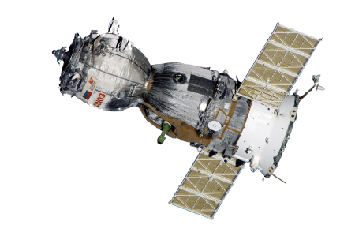
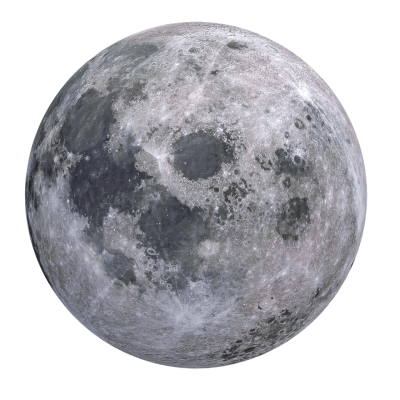
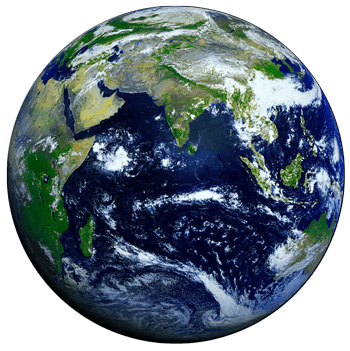
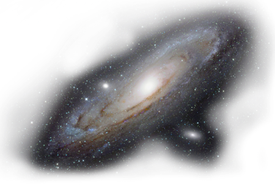

A través de nuestros Satélites Artificiales, Telescópios Terrestres y la ISS (International Space Station), podemos observar aquello que nos rodea.

También tenemos un Satélite Natural, llamado Luna que gracias a la fuerza gravitacional de la tierra, da vueltas alrededor nuestro a una distancia de 400.000 km.

Nuestro planeta se encuentra ubicado a la distancia óptima del Sol para la existencia de vida, es decir, en el lugar ideal para recibir la energía solar.

El Universo esta compuesto por miles de millones de Galaxias que a su vez, crean supercúmulos de materia.
hover & discover
Una estrella es una gran esfera de polvo y gas en el Universo que literalmente brilla con luz propia. Es un cuerpo celeste, un astro grande e incandescente que aparece en el cielo como un punto luminoso y que emite luz y calor.
El número de estrellas en el Universo no se conoce con exactitud, porque ni siquiera se conoce todo el Universo. No obstante, los científicos han identificado muchas de ellas y han hecho estimaciones sobre su abundancia. Para tener una idea, con un telescopio perfeccionado es posible observar más de 3,000 millones en el cielo visible. (fuente: https://www.geoenciclopedia.com/estrellas/)
Nuestra galaxia tiene forma espiral barrada, como un molinillo. En el centro de nuestra galaxia hay un agujero negro, que los científicos llaman Sagitario A. El centro no es redondo, sino algo alargado. Cerca de él están las estrellas más viejas, rojas y amarillas.
Vía Láctea y Nubes
Del centro nacen cuatro brazos: Brazo de Perseo, Brazo de Orión, Brazo de Sagitario y Brazo de Cruz Centauro. Forman un disco que gira lentamente en espiral. En los brazos están las estrellas más jóvenes, las blancas y azules. También hay muchas nebulosas; en la mayoría de ellas se forman nuevas estrellas. El Brazo de Sagitario es el más brillante de todos. (fuente: https://www.astromia.com/universo/comovialactea.htm)
El Grupo Local de Galaxias (con un diámetro de unos 6 millones de años-luz) al que pertenece la Vía Láctea, está constituido por más de 40 miembros, contiene unos 700.000 millones de masas solares (o estrellas como el Sol), pero casi la mitad de esta materia se encuentra en el interior de las dos galaxias mayores. El Grupo Local es sólo una pequeña porción del Supercúmulo Local, que alberga un gran número de grupos de galaxias, como el Grupo Local, el Grupo de la Osa Mayor constituidos por galaxias muy famosas como M 81, M 82, etc, el cúmulo de Virgo, etc. (fuente: http://www.xn--asociacionastronomicadeespaa-oyc.es/grupo-local.html)
Los cúmulos de estrellas se clasifican en dos grupos: cúmulos abiertos, que no poseen forma definida, y cúmulos globulares, que son esféricos o casi esféricos. Los abiertos están formados por unos cientos estrellas jóvenes, mientras que los cúmulos globulares contienen más de mil veces esa cantidad, y generalmente son estrellas muy viejas. (fuente: https://www.astromia.com/universo/cumulos.htm)
Los agujeros negros son los restos fríos de antiguas estrellas, tan densas que ninguna partícula material, ni siquiera la luz, es capaz de escapar a su poderosa fuerza gravitatoria. Mientras muchas estrellas acaban convertidas en enanas blancas o estrellas de neutrones, los agujeros negros representan la última fase en la evolución de enormes estrellas que fueron al menos de 10 a 15 veces más grandes que nuestro sol. (fuente: https://www.nationalgeographic.es/espacio/agujeros-negros)